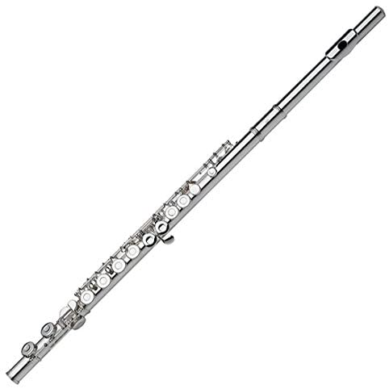

FLUTE
Flute, French flûte, German Flöte, wind instrument in which the sound is produced by a stream of air directed against a sharp edge, upon which the air breaks up into eddies that alternate regularly above and below the edge, setting into vibration the air enclosed in the flute. In vertical, end-vibrated flutes—such as the Balkan kaval, the Arabic nāy, and panpipes—the player holds the pipe end to his mouth, directing his breath against the opposite edge. In China, South America, Africa, and elsewhere, a notch may be cut in the edge to facilitate sound generation (notched flutes). Vertical nose flutes are also found, especially in Oceania. In transverse, or cross, flutes (i.e., horizontally held and side blown), the stream of breath strikes the opposite rim of a lateral mouth hole.
Vertical flutes such as the recorder, in which an internal flue or duct directs the air against a hole cut in the side of the instrument, are known as fipple, or whistle, flutes. Flutes are typically tubular but may also be globular, as with the ocarina and primitive gourd flutes. If a tubular flute is stopped at the lower end, its pitch is an octave lower than that of a comparable open flute.
Theobald Boehm, a Munich flute player and inventor, set out to rationalize the instrument, creating his new conical model in 1832. He replaced the traditional hole layout with an acoustically based one and improved the venting by replacing closed chromatic keys with open-standing keys, devising for their manipulation a system of ring keys on longitudinal axles (rings allow a player to close an out-of-reach key in the same motion as covering a finger hole).